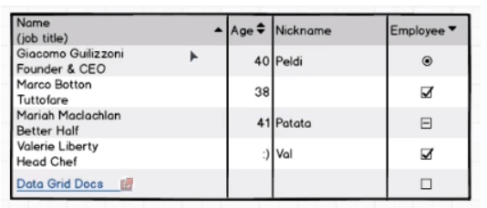
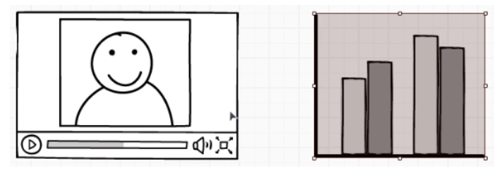
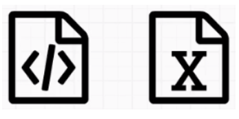
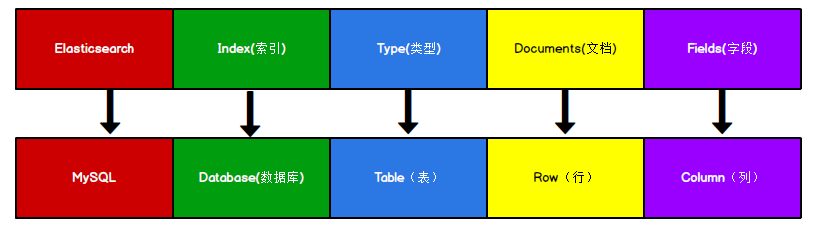
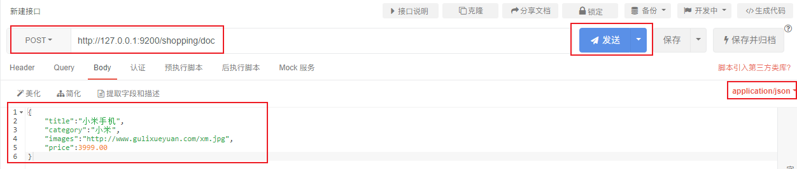

结构化数据（存在关系型数据库）

非结构化数据（非关系型数据库）

半结构化数据（非关系型数据库）

The Elastic Stack, 包括 Elasticsearch、 Kibana、 Beats 和 Logstash（也称为 ELK Stack）。能够安全可靠地获取任何来源、任何格式的数据，然后实时地对数据进行搜索、分析和可视化。
Elaticsearch，简称为 ES， ES 是一个开源的高扩展的分布式全文搜索引擎， 是整个 ElasticStack 技术栈的核心。
它可以近乎实时的存储、检索数据；本身扩展性很好，可以扩展到上百台服务器，处理 PB 级别的数据。
Google，百度类的网站搜索，它们都是根据网页中的关键字生成索引，我们在搜索的时候输入关键字，它们会将该关键字即索引匹配到的所有网页返回；还有常见的项目中应用日志的搜索等等。对于这些非结构化的数据文本，关系型数据库搜索不是能很好的支持。
一般传统数据库，全文检索都实现的很鸡肋，因为一般也没人用数据库存文本字段。进行全文检索需要扫描整个表，如果数据量大的话即使对 SQL 的语法优化，也收效甚微。建立了索引，但是维护起来也很麻烦，对于 insert 和 update 操作都会重新构建索引。
基于以上原因可以分析得出，在一些生产环境中，使用常规的搜索方式，性能是非常差的：
这里说到的全文搜索引擎指的是目前广泛应用的主流搜索引擎。它的工作原理是计算机索引程序通过扫描文章中的每一个词，对每一个词建立一个索引，指明该词在文章中出现的次数和位置，当用户查询时，检索程序就根据事先建立的索引进行查找，并将查找的结果反馈给用户的检索方式。这个过程类似于通过字典中的检索字表查字的过程。
Windows 版的 Elasticsearch 压缩包，解压即安装完毕，解压后的 Elasticsearch 的目录结构如下 ：
| 目录 | 含义 |
|---|---|
| bin | 可执行脚本目录 |
| config | 配置目录 |
| jdk | 内置 JDK 目录 |
| lib | 类库 |
| logs | 日志目录 |
| modules | 模块目录 |
| plugins | 插件目录 |
解压后，进入 bin 文件目录，点击 elasticsearch.bat 文件启动 ES 服务 。
注意： 9300 端口为 Elasticsearch 集群间组件的通信端口， 9200 端口为浏览器访问的 http协议 RESTful 端口。
打开浏览器，输入地址： http://localhost:9200，测试返回结果，返回结果如下：
x1{2 "name" : "DESKTOP-LNJQ0VF",3 "cluster_name" : "elasticsearch",4 "cluster_uuid" : "nCZqBhfdT1-pw8Yas4QU9w",5 "version" : {6 "number" : "7.8.0",7 "build_flavor" : "default",8 "build_type" : "zip",9 "build_hash" : "757314695644ea9a1dc2fecd26d1a43856725e65",10 "build_date" : "2020-06-14T19:35:50.234439Z",11 "build_snapshot" : false,12 "lucene_version" : "8.5.1",13 "minimum_wire_compatibility_version" : "6.8.0",14 "minimum_index_compatibility_version" : "6.0.0-beta1"15 },16 "tagline" : "You Know, for Search"17}18
REST 指的是一组架构约束条件和原则。满足这些约束条件和原则的应用程序或设计就是 RESTful。 Web 应用程序最重要的 REST 原则是，客户端和服务器之间的交互在请求之间是无状态的。从客户端到服务器的每个请求都必须包含理解请求所必需的信息。如果服务器在请求之间的任何时间点重启，客户端不会得到通知。此外，无状态请求可以由任何可用服务器回答，这十分适合云计算之类的环境。客户端可以缓存数据以改进性能。
在服务器端，应用程序状态和功能可以分为各种资源。资源是一个有趣的概念实体，它向客户端公开。资源的例子有：应用程序对象、数据库记录、算法等等。每个资源都使用 URI(Universal Resource Identifier) 得到一个唯一的地址。所有资源都共享统一的接口，以便在客户端和服务器之间传输状态。使用的是标准的 HTTP 方法，比如 GET、 PUT、 POST 和DELETE。
在 REST 样式的 Web 服务中，每个资源都有一个地址。资源本身都是方法调用的目 标，方法列表对所有资源都是一样的。这些方法都是标准方法，包括 HTTP GET、 POST、PUT、 DELETE，还可能包括 HEAD 和 OPTIONS。简单的理解就是，如果想要访问互联网上的资源，就必须向资源所在的服务器发出请求，请求体中必须包含资源的网络路径， 以及对资源进行的操作(增删改查)。
REST 样式的 Web 服务若有返回结果，大多数以JSON字符串形式返回。
如果直接通过浏览器向 Elasticsearch 服务器发请求，那么需要在发送的请求中包含 HTTP 标准的方法，而 HTTP 的大部分特性且仅支持 GET 和 POST 方法。所以为了能方便地进行客户端的访问，可以使用 Postman 软件Postman 是一款强大的网页调试工具，提供功能强大的 Web API 和 HTTP 请求调试。
软件功能强大，界面简洁明晰、操作方便快捷，设计得很人性化。 Postman 中文版能够发送任何类型的 HTTP 请求 (GET, HEAD, POST, PUT…)，不仅能够表单提交，且可以附带任意类型请求体。
正排索引（传统）
| id | content |
|---|---|
| 1001 | my name is zhang san |
| 1002 | my name is li si |
倒排索引
| keyword | id |
|---|---|
| name | 1001, 1002 |
| zhang | 1001 |
Elasticsearch 是面向文档型数据库，一条数据在这里就是一个文档。 为了方便大家理解，我们将 Elasticsearch 里存储文档数据和关系型数据库 MySQL 存储数据的概念进行一个类比

ES 里的 Index 可以看做一个库，而 Types 相当于表， Documents 则相当于表的行。这里 Types 的概念已经被逐渐弱化， Elasticsearch 6.X 中，一个 index 下已经只能包含一个type， Elasticsearch 7.X 中, Type 的概念已经被删除了。
对比关系型数据库，创建索引就等同于创建数据库。
在 APIpost中，向 ES 服务器发 PUT 请求 ： http://127.0.0.1:9200/shopping
请求后，服务器返回响应：
xxxxxxxxxx51{2 "acknowledged": true, //响应结果3 "shards_acknowledged": true, //分片结果4 "index": "shopping" //索引名称5}如果重复发 PUT 请求 ： http://127.0.0.1:9200/shopping 添加索引，会返回错误信息
xxxxxxxxxx181{2 "error": {3 "root_cause": [4 {5 "type": "resource_already_exists_exception",6 "reason": "index [shopping/J0WlEhh4R7aDrfIc3AkwWQ] already exists",7 "index_uuid": "J0WlEhh4R7aDrfIc3AkwWQ",8 "index": "shopping"9 }10 ],11 "type": "resource_already_exists_exception",12 "reason": "index [shopping/J0WlEhh4R7aDrfIc3AkwWQ] already exists",13 "index_uuid": "J0WlEhh4R7aDrfIc3AkwWQ",14 "index": "shopping"15 },16 "status": 40017}18
查看所有索引 在 Postman 中，向 ES 服务器发 GET 请求 ： http://127.0.0.1:9200/_cat/indices?v
这里请求路径中的_cat 表示查看的意思， indices 表示索引，所以整体含义就是查看当前 ES服务器中的所有索引，就好像 MySQL 中的 show tables 的感觉，服务器响应结果如下 :
xxxxxxxxxx21health status index uuid pri rep docs.count docs.deleted store.size pri.store.size2yellow open shopping J0WlEhh4R7aDrfIc3AkwWQ 1 1 0 0 208b 208b
| 表头 | 含义 |
|---|---|
| health | 当前服务器健康状态： green(集群完整) yellow(单点正常、集群不完整) red(单点不正常) |
| status | 索引打开、关闭状态 |
| index | 索引名 |
| uuid | 索引统一编号 |
| pri | 主分片数量 |
| rep | 副本数量 |
| docs.count | 可用文档数量 |
| docs.deleted | 文档删除状态（逻辑删除） |
| store.size | 主分片和副分片整体占空间大小 |
| pri.store.size | 主分片占空间大小 |
在 Postman 中，向 ES 服务器发 GET 请求 ： http://127.0.0.1:9200/索引名
例： http://127.0.0.1:9200/shopping
xxxxxxxxxx191{2 "shopping": {//索引名3 "aliases": {},//别名4 "mappings": {},//映射5 "settings": {//设置6 "index": {//设置 - 索引7 "creation_date": "1617861426847",//设置 - 索引 - 创建时间8 "number_of_shards": "1",//设置 - 索引 - 主分片数量9 "number_of_replicas": "1",//设置 - 索引 - 主分片数量10 "uuid": "J0WlEhh4R7aDrfIc3AkwWQ",//设置 - 索引 - 主分片数量11 "version": {//设置 - 索引 - 主分片数量12 "created": "7080099"13 },14 "provided_name": "shopping"//设置 - 索引 - 主分片数量15 }16 }17 }18}19
在 Postman 中，向 ES 服务器发 DELETE 请求 ： http://127.0.0.1:9200/shopping
返回结果如下：
xxxxxxxxxx31{2 "acknowledged": true3}再次查看所有索引，GET http://127.0.0.1:9200/cat/indices?v，返回结果如下：
xxxxxxxxxx11health status index uuid pri rep docs.count docs.deleted store.size pri.store.size
成功删除。
假设索引已经创建好了，接下来我们来创建文档，并添加数据。这里的文档可以类比为关系型数据库中的表数据，添加的数据格式为 JSON 格式
在 Postman 中，向 ES 服务器发 POST 请求 ： http://127.0.0.1:9200/shopping/doc，请求体JSON内容为：

xxxxxxxxxx151{2 "_index": "shopping",//索引3 "_type": "_doc",//类型-文档4 "_id": "ANQqsHgBaKNfVnMbhZYU",//唯一标识，可以类比为 MySQL 中的主键，随机生成5 "_version": 1,//版本6 "result": "created",//结果，这里的 create 表示创建成功7 "_shards": {//8 "total": 2,//分片 - 总数9 "successful": 1,//分片 - 总数10 "failed": 0//分片 - 总数11 },12 "_seq_no": 0,13 "_primary_term": 114}15
上面的数据创建后，由于没有指定数据唯一性标识（ID），默认情况下， ES 服务器会随机生成一个。
如果想要自定义唯一性标识，需要在创建时指定： http://127.0.0.1:9200/shopping/_doc/1，请求体JSON内容为：
xxxxxxxxxx61{2 "title":"小米手机",3 "category":"小米",4 "images":"http://www.gulixueyuan.com/xm.jpg",5 "price":3999.006}返回结果如下：
xxxxxxxxxx151{2 "_index": "shopping",3 "_type": "_doc",4 "_id": "1",//<------------------自定义唯一性标识5 "_version": 1,6 "result": "created",7 "_shards": {8 "total": 2,9 "successful": 1,10 "failed": 011 },12 "_seq_no": 1,13 "_primary_term": 114}15
此处需要注意：如果增加数据时明确数据主键，那么请求方式也可以为 PUT。